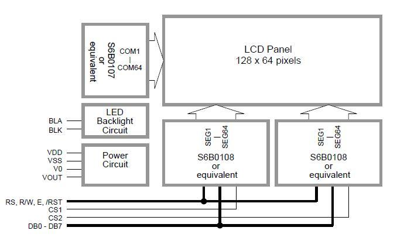
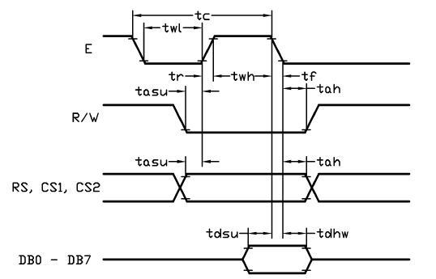
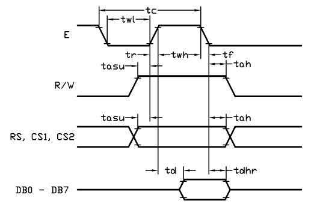
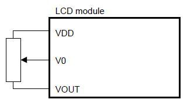
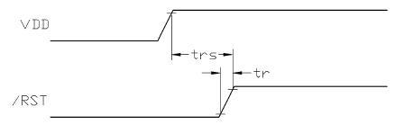

Model: LCD103B6B
http://www.seeedstudio.com/depot/images/product/lcd1621n.jpg

Note:
Vss=0V,VDD=5V,TOP=25℃
| Item | Symbol | MIN | TYP | MAX | Unit |
|---|---|---|---|---|---|
| E cycle time | tc | 1500 | - | - | ns |
| E high level width | twh | 700 | - | - | ns |
| E low level width | twl | 700 | - | - | ns |
| E rise time | tr | - | - | 18 | ns |
| E fall time | tf | - | - | 18 | ns |
| Address set-up time | tas | 5 | - | - | ns |
| Address set-up time | tasu | 210 | - | - | ns |
| Address hold time | tah | 15 | - | - | ns |
| Data set-up time | tdsw | 300 | - | - | ns |
| Data delay time | td | - | - | 480 | ns |
| Data hold time(write) | tdhw | 15 | - | - | ns |
| Data hold time(read) | tdhr | 30 | - | - | ns |
|  |  |
| Host Writing Timing Diagram | Host Read Timing Diagram |
| Pin No | Pin Name | I/O | Descriptions |
|---|---|---|---|
| 1 | VSS | Power | Negative Power supply, Ground(0V) |
| 2 | VDD | Power | Positive power supply |
| 3 | V0 | Power | LCD contrast reference |
| 4 | RS | Input |
|
| 5 | R/W | Input |
In read mode |
| 6 | E | Input | |
| 7 | DB0 | I/O | Data bus; Three state I/O terminal for display data or instruction data |
| .. | .. | .. | |
| 14 | DB7 | I/O | |
| 15 | CS1 | input | Chip Selection, When CS1=1(*1) |
| 16 | CS2 | Input | Chip Selection, When CS2=1(*1) |
| 17 | /RST | Input | Reset signal /RST = L, |
| 18 | VOUT | Output | Power Booster output for V0 |
| 19 | BLA | Power | Positive Power for LED backlight |
| 20 | BLK | Power | Negative Power for LED backlight |
Note:
Display or instruction data could write into the LCD mudule's driver/controllers individually or at the same time.
Only read display or instruction data form one of the driver/controller in the LCD module at a time, otherwise unexpected data collision may occur.
Outline Dimension:98.0*60.0*13.7MAX (See attached outline Drawing for details)
There are three registers in each section of LCD module. Each of them could be controlled independently.
Page(X) Address Register
X address register designates pages of the internal display data RAM. Count function is not available. The address should set by instruction.
Column(Y) Address Counter
Y address counter designates address of the internal display data RAM. It could be set by instruction and is increased by 1 automatically by read or write display data operations.
Display Start Line (Z) Register
Z address register indicates of display data RAM to LCD top line. It may be used for scrolling display pattern on the LCD.
To drive the LCD module correctly and provide normally display, please use the following setting
Note:
A Variable-Resistor must be connected to the LCD module for providing a reference to V0. Adjusting the VR will result the change of LCD display contrast. The recommended value of VR is 25k to 50k.

The LCD module should be initialized by setting /RST terminal at low level when turning the power on.
When /RST pull low, the LCD mudule will:
While /RST is low, no instruction can be accepted except status read. Therefore, execute other instructions after making sure that DB4=0(cleat /RST) and DB7=0(ready) by status read instruction. The conditions of power supply at initial power up are as follow:
| Item | Symbol | Min | Tpy | Max | Unit |
|---|---|---|---|---|---|
| Reset time | trs | 2.0 | - | - | us |
| Rise time | tr | - | - | 150 | ns |

The projects and application examples.
All the components used to produce the product.
Please list your question here:
If you have questions or other better design ideas, you can go to our forum or wish to discuss.
| Revision | Descriptions | Release |
|---|---|---|
| v0.9b | Initial public release | Jun 08, 2009 |
Bug Tracker is the place you can publish any bugs you think you might have found during use. Please write down what you have to say, your answers will help us improve our products.
The Additional Idea is the place to write your project ideas about this product, or other usages you've found. Or you can write them on Projects page.
Click here to buy: http://www.seeedstudio.com/depot/lcd-162-characters-green-yellow-back-light-p-62.html?cPath=163_164.
Other related products and resources.
This documentation is licensed under the Creative Commons Attribution-ShareAlike License 3.0 Source code and libraries are licensed under GPL/LGPL, see source code files for details.
Links to external webpages which provide more application ideas, documents/datasheet or software libraries.
Copyright (c) 2008-2016 Seeed Development Limited (www.seeedstudio.com / www.seeed.cc){kind=link}